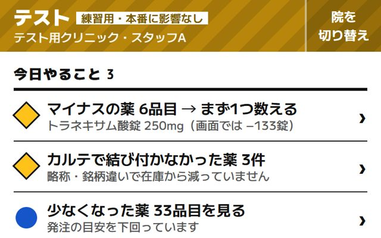

デモについて：本番の在庫・データベースには接続していません。操作した結果はこの端末のブラウザにだけ保存され、各デモの「デモの初期化」で元に戻せます。薬品名と在庫数は西春の品目を写したもので、患者・担当者はすべて架空です。
スマホ向け・タブレット向けの案は、その端末で開くと実際の大きさで見られます。最初に「テスト用」の院を選ぶと、練習用の表示で操作できます。
スマホ向け・タブレット向けの案は、その端末で開くと実際の大きさで見られます。最初に「テスト用」の院を選ぶと、練習用の表示で操作できます。
第2弾：ズレの発見・調整と仕入れ（推奨の組み立て）
処方による在庫引きはカルテからの反映が基本になる前提で、在庫アプリの仕事を「ズレを見つけて直す」と「仕入れ」に絞った4案です。ホームは案H、入荷は案F、数合わせは案E、事務のパソコンは案Gという組み立てを推奨しています。
第1弾：出庫（処方の受け渡し）中心（参考）
出庫の入力を中心に作った4案です。出庫がカルテ連動に移るため主役からは外れますが、ローマ字でも引ける検索・「外用」表示・練習モード・開院準備などの部品を第2弾に引き継いでいます。